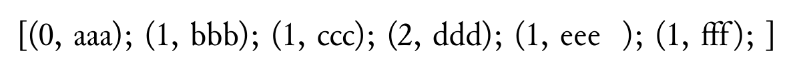

SATySFi による、100 までの fizz buzz です。
下のコードを見ずに関数 fizzbuzz : int -> string を書くのは、if の構文や文字列リテラルの構文を学ぶのに良いかもしれません。
コード例
@require: stdja
@require: standalone
@require: option
let fizzbuzz n =
if n <= 0 then
arabic n
else if n mod 3 == 0 then
(if n mod 5 == 0 then
`Fizz Buzz`
else
`Fizz`)
else if n mod 5 == 0 then
`Buzz`
else
arabic n
let-inline \fizzbuzz n =
embed-string (fizzbuzz n)
let space ctx =
let size = get-font-size ctx in
let ratio = get-space-ratio-between-scripts ctx Latin Latin in
let (r0, r1, r2) = Option.from (0.33, 0.08, 0.16) ratio in
let glue = inline-glue (size *' r0) (size *' r1) (size *' r2) in
discretionary 0 glue inline-nil inline-nil
let-inline ctx \fizzbuzz100 =
let-rec aux n pre-ib =
if n > 100 then pre-ib
else
let str = fizzbuzz n ^ (if n <> 100 then `,` else ` `) in
let fbn = embed-string str in
let fbn-ib = read-inline ctx fbn in
let ib =
pre-ib ++ space ctx ++ fbn-ib
in aux (n + 1) ib
in aux 1 inline-nil
in
standalone '<
+p {
\fizzbuzz100;
}
>
コード例の組版結果 (SATySFi version 0.0.3)
